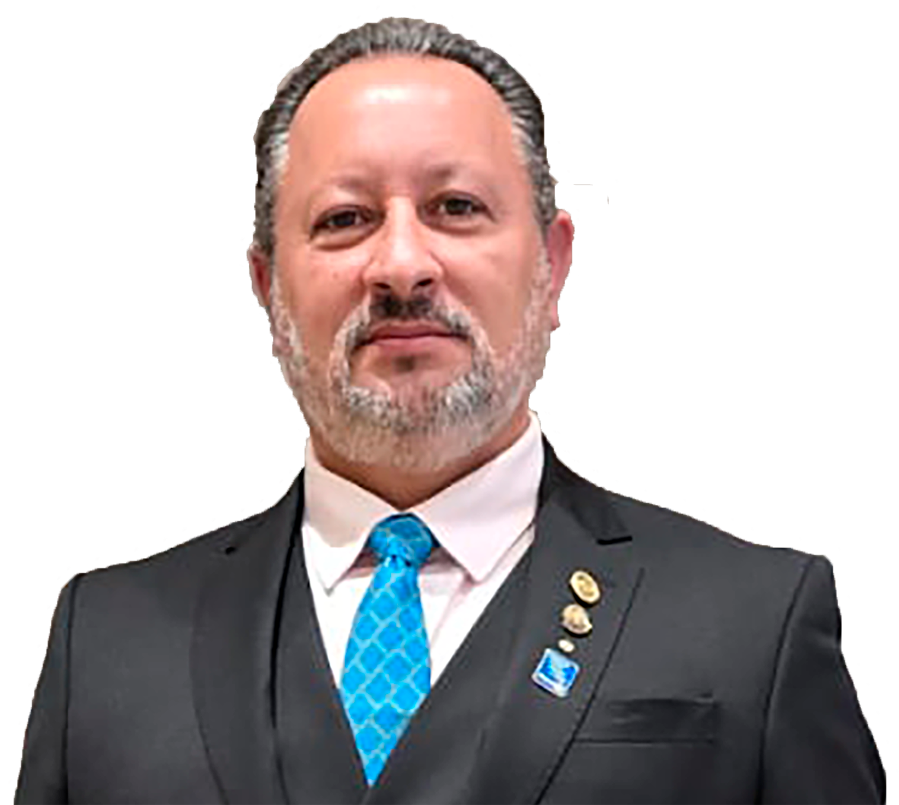

Rotary Club de Bauru
Ano rotário 2026-27 - Plano de Atividades
METAS E PROJETOS PARA O ANO ROTÁRIO 2026-27
METAS PARA O ANO ROTÁRIO 2026-27
Caros associados,
O ano rotário 2026-27 será marcado por iniciativas transformadoras e impactantes do Rotary Club de Bauru. Com base em projetos estratégicos e metas definidas pelo Conselho Diretor, buscamos fortalecer a comunidade, promover inclusão e capacitação, além de atrair novos membros e recursos. A seguir, apresentamos o detalhamento dos projetos a serem desenvolvidos e as metas que almejamos alcançar.
Projetos e Iniciativas:
- Projeto "Alta Frequência":
- Objetivo: Organizar durante o ano rotário reuniões com pautas balanceadas entre discussões problemas comunitários, compartilhamento de informações valiosas e atualização dos associados.
- Metas: Realizar acompanahmento pelos padrinhosdos associados falatantes, imprimndo assim comunicação e engajamento.
- Projeto RYLA na Legião:
- Objetivo: Organizar dois RYLAs na Legião Mirim de Bauru, um por semestre, em parceria com a coordenação da juventude do Distrito 4510.
- Metas: Envolver pelo menos 30 legionários em cada um dos eventos.
- Projeto "Bom Companheiro":
- Objetivo: Em parceria com a Secretaria de Municipal Educação, desenvolver projeto sobre amizade e companheirismo na escola que ocupa o predio construido pelo Rotary, promover uma eleição dos bons companheiros do ano e, em solenidade formal, reconhecer e premiar os alunos eleitos.
- Metas: Envolver pelo menos os alunos do 1º ao 5º ano do Ensino fundamental.
- Projeto "Ver é Viver":
- Objetivo: Prover exames oftalmológicos e óculos corretivos para melhorar a visão e o aprendizado dos legionários.
- Metas: Atender todos os legionários com exames e distribuição de óculos até o final do ano rotário e estender o atendimento a outras instituições.
- Projeto "Mulheres que Decidem, elas são digitais":
- Objetivo: Oferecer formação empresarial para jovens mulheres de baixa renda com pequenos negócios, aumentando seu faturamento e preparando-as para vender pela internet.
- Metas: Capacitar 150 empreendedoras, aumentar em 20% o faturamento de seus negócios.
- Projeto "Sorriso Feliz":
- Objetivo: Prover avaliação ortodôntica e aparelhos dentários para legionários que necessitam.
- Metas: Realizar avaliações ortodônticas em 100 legionários e fornecer aparelhos dentários para pelo menos 50 deles.
- Projeto "A Empresa Bauruense é Cidadã":
- Objetivo: Atraír empresas bauruenses para obterem o título "Empresa Solidária" e arrecadar fundos para a Fundação Rotária.
- Metas: Conquistar 20 novas empresas solidárias e arrecadar um valor significativo para apoiar projetos sociais da Fundação Rotária.
Conclusão: O Rotary Club de Bauru está comprometido com a execução desses projetos e o cumprimento das metas estabelecidas pelo Conselho Diretor para o ano rotário 2024-25. Com a participação ativa dos sócios, parcerias estratégicas e o apoio da comunidade, estamos confiantes de que alcançaremos nossos objetivos e faremos uma diferença significativa em nossa cidade. Convidamos todos a se unirem a nós nesta jornada de transformação e impacto positivo.
Rotariamente,

Fábio Donizete de Mendonça
Presidente do Rotary Club Bauru
Ano rotário 2026-27